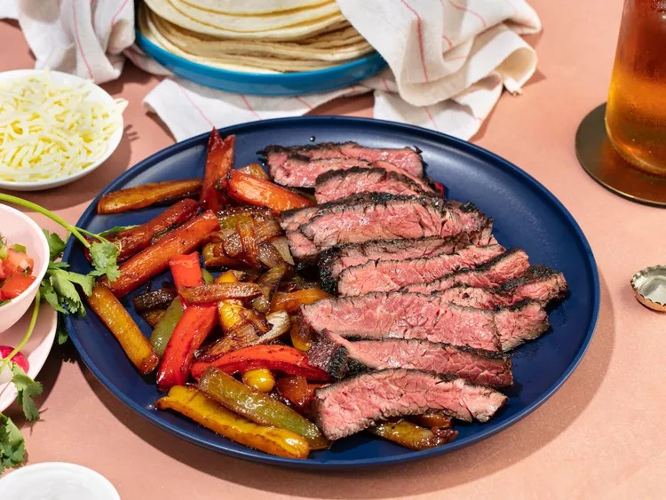

Fajitas

Fresh from the grill!
There's the DIY aspect of fajitas that makes them a winner. As a kid, there's nothing better than being presented with that plate of guacamole, pico de gallo, and sour cream; the anticipation of that sizzling platter of meat and vegetables laid down before you. When they arrive, you've already picked out a soft, blistered floured tortilla from the steaming stack in the warmer at the center of the table. The meat itself should be ultra juicy, with an overwhelming, almost buttery beefiness—this is skirt steak, after all, the butteriest of all beef—accented by a fajita marinade that's slightly sweet, very savory, and packed with lime and chile. And, of course, that meat's got to be tender. Nothing worse than biting into a carefully wrapped fajita only to have that long strip of beef slip out of its tortilla housing, like a sleeping camper from his sleeping bag. Better to be able to bite that camper in half, right? So how do we reach this fajita perfection? It's easier than you think—all it takes is a bit of strategy and know-how.
Ingredients:
Steak Marinade:
- 1/2 cup (120ml) soy sauce
- 1/2 cup (120ml) lime juice, from 6 to 8 limes
- 1/2 cup (120ml) canola oil
- 1/4 cup (55g) packed brown sugar
- 1 tablespoon chili powder (see notes)
- 3 medium cloves garlic, finely minced (about 1 tablespoon)
- 2 teaspoons ground cumin seeds
- 2 teaspoons freshly ground black pepper
- 2 pounds (900g) trimmed skirt steak (about 1 whole steak; see note), cut crosswise into 5- to 6-inch pieces
Fajitas & Toppings
- 1 large red bell pepper, stemmed, seeded, and cut into 1/2-inch-wide strips
- 1 large yellow bell pepper, stemmed, seeded, and cut into 1/2-inch-wide strips
- 1 large green bell pepper, stemmed, seeded, and cut into 1/2-inch-wide strips
- 1 white or yellow onion, cut into 1/2-inch slices
- 12 to 16 fresh flour or corn tortillas, hot
- 1 recipe guacamole, for serving, if desired
- 1 recipe pico de gallo, for serving, if desired
- Sour cream, shredded cheese, and salsa, for serving, if desired
Steps:
- For the Fajita Marinade: Combine soy sauce, lime juice, canola oil, brown sugar, chili powder, garlic, cumin, and black pepper in a medium bowl and whisk to combine. Transfer 1/2 cup (120ml) marinade to a large bowl and set aside.
- For the Steak: Place steaks in a gallon-sized zipper-lock bag and add remaining marinade. Seal bag, squeezing out as much air as possible. Massage bag until meat is fully coated in marinade. Lay flat in the refrigerator, turning every couple of hours, for at least 3 hours and up to 10.
- For the Fajitas: While steak marinates, toss peppers and onion in bowl with reserved 1/2 cup marinade. Refrigerate until ready to use.
- When ready to cook, remove steaks from marinade, wipe off excess, and transfer to a large plate. Light one chimney full of charcoal. When all charcoal is lit and covered with gray ash, pour out and arrange coals on one side of charcoal grate. Set cooking grate in place, cover grill, and allow to preheat for 5 minutes. Clean and oil grilling grate.
- Place a large cast iron skillet over cooler side of grill. Transfer steaks to hot side of grill. Cover and cook for 1 minute. Flip steaks, cover, and cook for another minute. Continue cooking in this manner, flipping and covering, until steaks are well charred and an instant-read thermometer inserted into their center registers 115 to 120°F (46 to 49°C) for medium-rare or 125 to 130°F (52 to 54°C) for medium. Transfer steaks to a large plate, tent with foil, and allow to rest for 10 to 15 minutes.
- Meanwhile, transfer cast iron skillet to hot side of grill and allow to preheat for 2 minutes. Add pepper and onion mix and cook, stirring occasionally, until vegetables are softened and beginning to char in spots, about 10 minutes. When vegetables are cooked, transfer steaks to a cutting board and pour any accumulated juices from plate into skillet with vegetables. Toss to coat.
- Transfer vegetables to a warm serving platter. Thinly slice meat against the grain and transfer to platter with vegetables. Serve immediately with hot tortillas, guacamole, pico de gallo, and other condiments as desired.